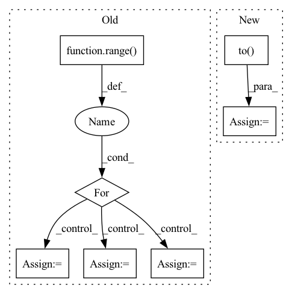

Pattern ID :41311

Before Change
// Self-attention
attn_mask = 1 - valid_his.unsqueeze(1).repeat(1, seq_len, 1)
for i in range(self.num_layers):
residual = his_vectors
// self-attention
query, key, value = self.Q(his_vectors), self.K(his_vectors), self.V(his_vectors)
scale = self.emb_size ** -0.5
his_vectors = components.scaled_dot_product_attention(
query, key, value, scale=scale, attn_mask=attn_mask)
// mlp forward
his_vectors = self.W1(his_vectors).relu()
his_vectors = self.W2(his_vectors) // [batch_size, history_max, emb_size]
// dropout, residual and layer_norm
his_vectors = self.dropout_layer(his_vectors)
his_vectors = self.layer_norm(residual + his_vectors)
// ↑ layer norm in the end is shown to be more effective
his_vectors = his_vectors * valid_his[:, :, None].float()
After Change
// Self-attention
causality_mask = np.tril(np.ones((1, 1, seq_len, seq_len), dtype=np.int))
attn_mask = torch.from_numpy(causality_mask).to(self.device)
// attn_mask = valid_his.view(batch_size, 1, 1, seq_len)
for block in self.transformer_block:
his_vectors = block(his_vectors, attn_mask)
his_vectors = his_vectors * valid_his[:, :, None].float()
In pattern: SUPERPATTERN
Frequency: 3
Non-data size: 7
Instances
Fragment ID: 116378986
Project Name: thuwangcy/rechorus
Commit Name: dba1d0bd7b6d7296ed6c730793e0f61278007dc2
Time: 2020-11-08
Author: THUwangcy@gmail.com
File Name: src/models/sequential/SASRec.py
M Class Name: SASRec
N Class Name: SASRec
M Method Name: forward(2)
N Method Name: forward(2)
M Parent Class: GRU4Rec
N Parent Class: GRU4Rec
M File Name: src/models/sequential/SASRec.py
N File Name: src/models/sequential/SASRec.py
M Start Line: 41
M End Line: 72
N Start Line: 41
N End Line: 66
'>
Before Change
if (epoch == 0) and (i == 0):
num_plot = 3
for p in range(num_plot):
ix_in_batch = random.randint(0, input.shape[0] - 1)
for channel in range(input.shape[1]):
img = input[ix_in_batch, channel, :, :]
xyz_tar = target[0][ix_in_batch, :]
phot_tar = target[1][ix_in_batch]
PlotFrameCoord(frame=img, pos_tar=xyz_tar).plot()
plt.title("Sample in Batch: {} - Channel: {}".format(ix_in_batch, channel))
plt.show()
After Change
// measure data loading time
data_time.update(time.time() - end)
input = input.to(hy_par.device)
if type(target) is torch.Tensor:
target = target.to(hy_par.device)
elif type(target) in (tuple, list):
target = (target[0].to(hy_par.device), target[1].to(hy_par.device))
'>
Fragment ID: 116378856
Project Name: turagalab/decode
Commit Name: a5c4769ad28b4a03dafa04e795307eed30b4c264
Time: 2019-03-26
Author: gitdev@LRM.photo
File Name: deepsmlm/neuralfitter/train_test.py
M Class Name: AnonimousClass
N Class Name: AnonimousClass
M Method Name: train(8)
N Method Name: train(7)
M Parent Class:
N Parent Class:
M File Name: deepsmlm/neuralfitter/train_test.py
N File Name: deepsmlm/neuralfitter/train_test.py
M Start Line: 36
M End Line: 72
N Start Line: 29
N End Line: 112
'>
Before Change
x_pred.append(self.true_time_series[:, 0, :].clone())
forward_tensor = self.true_time_series[:, 0, :].clone().to(reservoir.device)
hh = None
for t in range(1, self.true_time_series.shape[-2]):
forward_tensor, hh = unpack_out_hh(reservoir(forward_tensor, hh, t=t-1))
forward_tensor, _ = unpack_out_hh(output_layer(forward_tensor, None, t=t-1))
x_pred.append(forward_tensor)
// eligibility_traces = dy_dw_local(y=forward_tensor, params=self.params)
// self.eprop.eligibility_traces = eligibility_traces
// batch_loss = self.eprop.apply_criterion(forward_tensor, self.true_time_series[:, t].to(forward_tensor.device))
// learning_signals = self.compute_learning_signals(loss_at_t)
// errors = self.eprop.compute_errors(forward_tensor, self.true_time_series[:, t])
// learning_signals = self.eprop.compute_learning_signals(errors)
// self.eprop.update_grads(errors, batch_loss)
forward_tensor.detach_()
hh = recursive_detach(hh)
// if t % self.update_each == 0:
// self.eprop._make_optim_step()
self.eprop._make_optim_step()
After Change
inputs = self.raw_time_series[:, 0, :].clone().unsqueeze(1).to(self.model.device)
for _ in range(100):
val_x_pred = self.model.get_prediction_trace(inputs)
pvar = PVarianceLoss()(val_x_pred, self.raw_time_series.to(val_x_pred.device))
val_pvars.append(to_numpy(pvar).item())
print(f"Validation PVariance: {np.mean(val_pvars):.3f}")
return x_pred, self.raw_time_series
'>
Fragment ID: 116378977
Project Name: neurotorch/neurotorch
Commit Name: da8d4065502c761ccf6e28e47dd189e3b5488140
Time: 2023-01-31
Author: 50332514+JeremieGince@users.noreply.github.com
File Name: src/neurotorch/learning_algorithms/debug_e_prop_v5.py
M Class Name: SimplifiedEpropFinal
N Class Name: SimplifiedEpropFinal
M Method Name: train(4)
N Method Name: train(4)
M Parent Class:
N Parent Class:
M File Name: src/neurotorch/learning_algorithms/debug_e_prop_v5.py
N File Name: src/neurotorch/learning_algorithms/debug_e_prop_v5.py
M Start Line: 120
M End Line: 153
N Start Line: 115
N End Line: 144